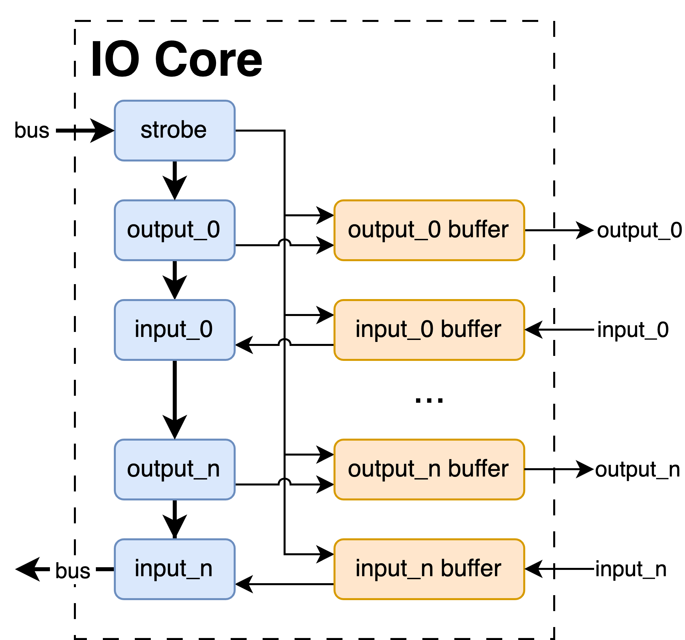

IO Core
Overview
Registers are a fundamental building block of digital hardware, and the IO core provides a simple way of interacting with them from the host machine. It allows you to define a set of inputs and outputs of arbitrary width, and then set values to the outputs and read values from the inputs.
This is a very, very simple task - and while configuration is straightforward, there are a few caveats. More on both topics below:
Configuration
Just like the rest of the cores, the IO core is configured via an entry in a project's configuration file. This is easiest to show by example:
---
my_io_core:
type: io
inputs:
kermit: 3
piggy: 1
animal: 38
scooter:
width: 4
initial_value: 13
outputs:
fozzy: 1
gonzo: 3
user_clock: True
name(required): The name of the IO core. This name is used to reference the core when working with the API, and can be whatever you'd like.type(required): This denotes that this is an IO core. All cores contain atypefield, which must be set toioto be recognized as an IO core.inputs(optional): This lists all inputs from from the FPGA fabric to the host machine. Signals in this list may be read by the host, but cannot be written to. Technically specifying input probes is totally optional - it's perfectly fine to have an IO core with only output probes.outputs(optional): This lists all outputs from the host machine to the FPGA fabric. Signals in this list are usually written to by the host, but they can also be read from. Doing so returns the value last written to the register. Just like theinputsparameter, this list is techically optional, and it's perfectly valid to have an IO core with input probes only.initial_value(optional): This sets an initial value for an output probe to take after the FPGA powers on. This is done with aninitialstatement in Manta's Verilog, and is independent of the input clock or resets elsewhere in the FPGA. This parameter is optional, and if it isn't provided the probe will initialize to zero.
user_clock(optional): If set to True, an extra input port will be added to themantamodule for an clock input to run the IO core on. This lets the IO Core handle clock domain crossing through its internal buffers. If set to False, Manta will run the IO core from its internal clock (the one provided throughmanta'sclkport). More information on this is available in the diagram below. This parameter is optional, and defaults to False.
Name things carefully!
The names of the core and its probes are referenced in the autogenerated Verilog. This means that while the names can be arbitrary, they must be unique within your project and not contain any characters that your synthesis engine won't appreciate.
Python API
The IO core functionality is stored in the Manta.IOCore, Manta.InputProbe, and Manta.OutputProbe classes in src/manta/io_core/__init__.py, and it may be controlled with the two functions:
Manta.IOCoreProbe.set(data)
- [
int,bool] data: The value to write to an output probe. May be signed or unsigned, but will raise an exception if the value is too large for the width of the port. - returns: None
This method is blocking. When called it will dispatch a request to the FPGA, and wait until a response has been receieved.
Manta.IOCoreProbe.get()
- returns: The value of an input or output probe. In the case of an output probe, the value returned will be the last value written to the probe.
This method is blocking. When called it will dispatch a request to the FPGA, and wait until a response has been receieved.
Example
A small example is shown below, using the example configuration above. More extensive examples can also be found in the repository's examples/ folder.
>>> import Manta
>>> m = Manta
>>> m.my_io_core.fozzy.set(True)
>>> m.my_io_core.fozzy.get()
True
>>> m.my_io_core.gonzo.set(4)
>>> m.my_io_core.scooter.get()
5
Caveats
While the IO core performs a very, very simple task, it carries a few caveats.
-
First, it's not instantaneous. Manta has designed to be as fast as possible, but setting and querying registers relies on passing messages between the host and FPGA, which is slow relative to FPGA clock speeds! If you're trying to set values in your design with cycle-accurate timing, this will not do that for you. However, the Logic Analyzer's playback feature might be helpful.
-
Second, the API methods are blocking, and will wait for a response from the FPGA before resuming program execution. Depending on your application, you might want to run your IO Core operations in a seperate thread, but you can also decrease the execution time by using a faster interface between the host and FPGA. This means using a higher UART baudrate, or using Ethernet.
How It Works
This is done with the architecture shown below:

Each of the probes is mapped to a register of Manta's internal memory. Since Manta's internal registers are 16 bits wide, probes less than 16 bits are mapped to a single register, but probes wider than 16 bits require multiple.
Whatever the number of registers required, these are read from and written to by the host machine - but the connection to the user's logic isn't direct. The value of each probe is buffered, and only once the strobe register has been set to one will the buffers update. When this happens, output probes provide new values to user logic, and new values for input probes are read from user logic. This provides a convenient place to perform clock domain crossing, and also mitigates the possibility of an inconsistent system state. This is explained in more detail in Chapter 3.6 of the original thesis.